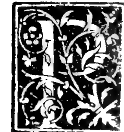

CAPITOLO V¶
Del condecente titulo del presente tractato.

Parme del nostro tractato excelso Duca el suo condecente titulo douer essere dela diuina proportione. E questo per molte simili conuenientie quali trono in la nostra proportione delaquale in questo nostro vtilissimo discorso intendemo a epso dio spectanti. Delequali fra laltre quatro ne prendaremo a sufficientia del nostro proposito. La prima e che lei fia vna sola e non più. e non e possibile di lei asegnare altre specie ne differentie. Laquale vnita fia el supremo epiteto de epso idio secondo tutta la scuola theologica e anche philosophica. La seconda conuenientia e dela sancta trinità.
Cioè si commo in diuinis vna medesima substantia fia fra tre persone padre figlio e spirito sancto. Cosi vna medesima proportione de questa sorte sempre conuen se troui fra tre termini, e mai ne in più ne in manco se pò retrouare. Commo se dira. La terza conuenientia e che si commo idio propriamente non se pò diffinire ne per parolle a noi intendere, cosi questa nostra proportione non se pò mai per numero intendibile asegnare ne per quantità alcuna rationale esprimere: ma sempre fia occulta e secreta e dali Mathematici chiamata irrationale.
La quarta conuenientia e che si commo idio mai non se pò mutare e fia tutto in tutto e tutto in ogni parte cosi la presente nostra proportione sempre in ogni quantità Continua e discreta: o sienno, grandi: o sienno piccole fia vna medesima e sempre inuariabile e per verun modo se pò mutare ne anco per intellecto altramente apprendere, commo el nostro processo demostrara. La quinta conuenientia se pò non immeritamente ale predicti at ogere cioè. Si commo idio lessere conferesci ala virtù celeste per altro nome detta quinta essentia e mediante quella ali altri quatro corpi sempiici, cioè ali quatro elementi. Terra. Aqua. Aire. E fuoco. E per questi lessere a cadauna altra cosa in natura.
Cosi questa nostra sancta proportione lesser formale da (secondo lantico Platone in suo Timeo) a epso cielo atribuendoli la figura del corpo detto Duodecedron, altramente corpo de 12 pentagoni. El quale commo desotto se mostrara senza la nostra proportione non e possibile poterse formare. E similmente a ciascuno de li altri elementi sua propria forma asegna fra loro per niun modo coincidenti, cioè al fuoco la figura pyramidale detto Tetracedron. A latera la figura cubica delta exacedron. Alaire la figura detta octocedron. E alaqua quella detta ycocedron. E queste tal forme e figure dali sapienti tutti corpi regulari sonnonuncupate. Commo separatemente disotto de cadauno se dira. E poi medianti sti a infiniti altri corpi detti dependenti.
Li quali 5 regulari non e possibile fra loro poterse proportionare ne dala spera poterse intendere circonscriptibili senza la nostra detta proportione. El che desotto tutto apparerà. Le quali conuenientie, benché altre assai sene potesse adure, queste ala condecente denorainatione del presente compendio sienno per sufficientia assegnate.